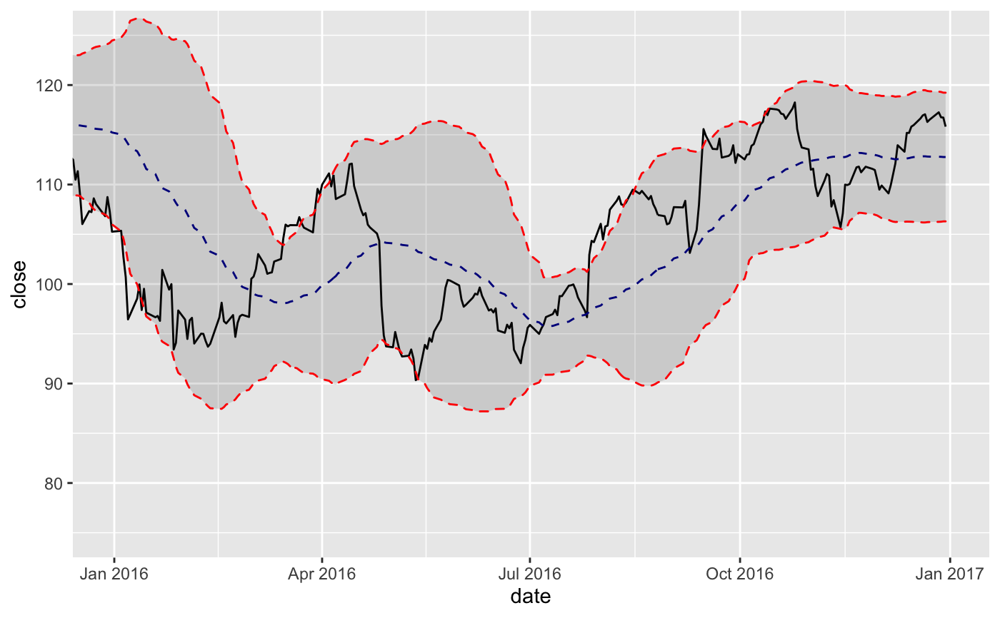

Bollinger Bands plot a range around a moving average typically two standard deviations up and down.
The geom_bbands() function enables plotting Bollinger Bands quickly using various moving average functions.
The moving average functions used are specified in TTR::SMA()
from the TTR package. Use coord_x_date() to zoom into specific plot regions.
The following moving averages are available:
Simple moving averages (SMA): Rolling mean over a period defined by
n.Exponential moving averages (EMA): Includes exponentially-weighted mean that gives more weight to recent observations. Uses
wilderandratioargs.Weighted moving averages (WMA): Uses a set of weights,
wts, to weight observations in the moving average.Double exponential moving averages (DEMA): Uses
vvolume factor,wilderandratioargs.Zero-lag exponential moving averages (ZLEMA): Uses
wilderandratioargs.Volume-weighted moving averages (VWMA): Requires
volumeaesthetic.Elastic, volume-weighted moving averages (EVWMA): Requires
volumeaesthetic.
geom_bbands(mapping = NULL, data = NULL, position = "identity", na.rm = TRUE, show.legend = NA, inherit.aes = TRUE, ma_fun = SMA, n = 20, sd = 2, wilder = FALSE, ratio = NULL, v = 1, wts = 1:n, color_ma = "darkblue", color_bands = "red", alpha = 0.15, fill = "grey20", ...) geom_bbands_(mapping = NULL, data = NULL, position = "identity", na.rm = TRUE, show.legend = NA, inherit.aes = TRUE, ma_fun = "SMA", n = 10, sd = 2, wilder = FALSE, ratio = NULL, v = 1, wts = 1:n, color_ma = "darkblue", color_bands = "red", alpha = 0.15, fill = "grey20", ...)
Arguments
| mapping | Set of aesthetic mappings created by |
|---|---|
| data | The data to be displayed in this layer. There are three options: If A A |
| position | Position adjustment, either as a string, or the result of a call to a position adjustment function. |
| na.rm | If |
| show.legend | logical. Should this layer be included in the legends?
|
| inherit.aes | If |
| ma_fun | The function used to calculate the moving average. Seven options are
available including: SMA, EMA, WMA, DEMA, ZLEMA, VWMA, and EVWMA. The default is
|
| n | Number of periods to average over. Must be between 1 and
|
| sd | The number of standard deviations to use. |
| wilder | logical; if |
| ratio | A smoothing/decay ratio. |
| v | The 'volume factor' (a number in [0,1]). See Notes. |
| wts | Vector of weights. Length of |
| color_ma, color_bands | Select the line color to be applied for the moving average line and the Bollinger band line. |
| alpha | Used to adjust the alpha transparency for the BBand ribbon. |
| fill | Used to adjust the fill color for the BBand ribbon. |
| ... | Other arguments passed on to |
Aesthetics
The following aesthetics are understood (required are in bold):
x, Typically a datehigh, Required to be the high pricelow, Required to be the low priceclose, Required to be the close pricevolume, Required for VWMA and EVWMAcolour, Affects line colorsfill, Affects ribbon fill coloralpha, Affects ribbon alpha valuegrouplinetypesize
See also
See individual modeling functions for underlying parameters:
TTR::SMA()for simple moving averagesTTR::EMA()for exponential moving averagesTTR::WMA()for weighted moving averagesTTR::DEMA()for double exponential moving averagesTTR::ZLEMA()for zero-lag exponential moving averagesTTR::VWMA()for volume-weighted moving averagesTTR::EVWMA()for elastic, volume-weighted moving averagescoord_x_date()for zooming into specific regions of a plot
Examples
# Load libraries library(tidyquant) AAPL <- tq_get("AAPL") # SMA AAPL %>% ggplot(aes(x = date, y = close)) + geom_line() + # Plot stock price geom_bbands(aes(high = high, low = low, close = close), ma_fun = SMA, n = 50) + coord_x_date(xlim = c(today() - years(1), today()), ylim = c(80, 130))# EMA AAPL %>% ggplot(aes(x = date, y = close)) + geom_line() + # Plot stock price geom_bbands(aes(high = high, low = low, close = close), ma_fun = EMA, wilder = TRUE, ratio = NULL, n = 50) + coord_x_date(xlim = c(today() - years(1), today()), ylim = c(80, 130))# VWMA AAPL %>% ggplot(aes(x = date, y = close)) + geom_line() + # Plot stock price geom_bbands(aes(high = high, low = low, close = close, volume = volume), ma_fun = VWMA, n = 50) + coord_x_date(xlim = c(today() - years(1), today()), ylim = c(80, 130))